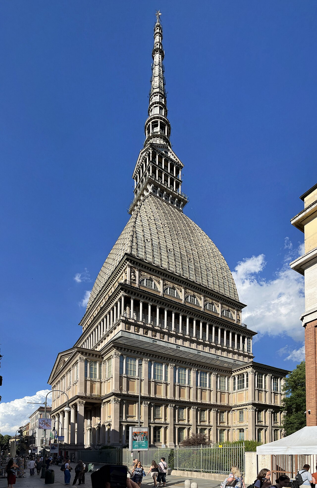

Palazzo della Vittoria, esterni
Confronta il disegno delle facciate, senza entrare negli androni privati.
Controlla costo, prenotazione, apertura e accessibilità con il gestore. / Check price, booking, opening and accessibility with the operator.

Confronta il disegno delle facciate, senza entrare negli androni privati.
Controlla costo, prenotazione, apertura e accessibilità con il gestore. / Check price, booking, opening and accessibility with the operator.